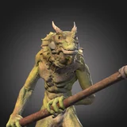
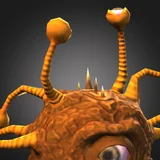

Unit
Bog Hexer
Bog Hexer is a tier 1 support unit of the Mirefolk, Soulbinder and Mender alliances.
Bog Hexer is a tier 1 (Common) support unit. It costs 1 gold in the shop and carries the Mirefolk, Soulbinder and Mender alliances.
Ability
 Mire Draught
Mire Draught
Splashes a restorative brew over the most wounded allies, healing them.
- Cast
- When mana is full. Casting spends all of it.
- Cast point
- 0.4 seconds from the start of the cast to its effect.
- Targets
- The 2 / 2 / 3 allies with the lowest share of health left (itself included; values per star).
- Heals the targets for 200 / 350 / 500 health (values per star).
Full details are on the Mire Draught ability page. See Mana and casting for how mana is gained.
Stats
| Stat | 1 star | 2 stars | 3 stars |
|---|---|---|---|
| Health | 975 | 1,950 | 3,900 |
| Attack damage | 40 to 60 | 80 to 120 | 160 to 240 |
| Seconds per attack | 1.7 | 1.7 | 1.7 |
| Attacks per second | 0.59 | 0.59 | 0.59 |
| Wind-up before the hit (seconds) | 0.3 | 0.3 | 0.3 |
| Average damage per second | 29.4 | 58.8 | 117.6 |
| Attack range (cells) | 4 | 4 | 4 |
| Armour | 0 | 0 | 0 |
| Magic resistance | 0% | 0% | 0% |
| Maximum mana | 100 | 100 | 100 |
| Move speed | 290 | 290 | 290 |
| Seconds to cross one cell | 0.44 | 0.44 | 0.44 |
| Projectile speed (cells per second) | 9.4 | 9.4 | 9.4 |
Seconds per attack is the time from the start of one attack to the start of the next, before any attack speed bonus. Average damage per second is the middle of the damage range divided by the seconds per attack, before armour, bonuses and critical strikes.
Cost, upgrades and selling
3 copies of Bog Hexer at the same star level combine into one copy of the next star level, up to 3 stars. See Star upgrades for how combining works and Gold and income for gold.
| 1 star | 2 stars | 3 stars | |
|---|---|---|---|
| Copies needed | 1 | 3 | 9 |
| Gold to buy those copies | 1 | 3 | 9 |
| Sell value in gold | 1 | 3 | 5 |
| Copies returned to the pool when sold | 1 | 3 | 9 |
The shared pool holds 30 copies of Bog Hexer for all players together, as it does for every tier 1 unit. See The shared pool and The shop.
Alliances
 Mirefolk race
Mirefolk race
Bog-dwellers whose war drums quicken every heart. Mirefolk gain attack speed and other allies gain half as much.
| Units needed | Effect |
|---|---|
| 2 | Mirefolk units: +20% attack speed. At the start of combat, each Mirefolk unit applies War Drums (Mirefolk, 2 units) (+20% attack speed) to all allies (itself included) for the rest of combat. This does not stack: however many units apply it, each target has it once. |
| 4 | Mirefolk units: +30% attack speed. At the start of combat, each Mirefolk unit applies War Drums (Mirefolk, 4 units) (+40% attack speed) to all allies (itself included) for the rest of combat. This does not stack: however many units apply it, each target has it once. |
 Soulbinder class
Soulbinder class
Casting a spell binds the Soulbinder to the most wounded ally. For a short time both heal for part of the damage they deal.
| Units needed | Effect |
|---|---|
| 2 | When a Soulbinder unit casts an ability, it applies Soul Link (Soulbinder, 2 units) (+50% lifesteal on attack damage) to itself and the ally with the lowest share of health left (itself included) for 2 seconds. |
| 4 | When a Soulbinder unit casts an ability, it applies Soul Link (Soulbinder, 4 units) (+60% lifesteal on attack damage) to itself and the ally with the lowest share of health left (itself included) for 2.5 seconds. |
| 6 | When a Soulbinder unit casts an ability, it applies Soul Link (Soulbinder, 6 units) (+70% lifesteal on attack damage) to itself and the ally with the lowest share of health left (itself included) for 3 seconds. |
 Mender class
Mender class
Field surgeons and hedge-priests. All healing your units receive is amplified.
| Units needed | Effect |
|---|---|
| 2 | All allies: +25% healing received. Allies summoned later in the fight get this too. |
| 4 | All allies: +45% healing received. Allies summoned later in the fight get this too. |
How units are counted towards a step is explained under How alliances count.
Fights well with
These units share an alliance with Bog Hexer, so fielding them together works towards the same steps.


Other tier 1 units
The other tier 1 units. They cost the same and share the same tier odds. Within the tier, a unit with more copies left in the pool is offered more often. See The shop and the Unit stat table.
 Ashen Pilgrim
Ashen Pilgrim
Drowned Pikeman Gargoyle Gunner
Gargoyle Gunner Grave Archer
Grave Archer Gutter Scavenger
Gutter Scavenger Hive Skulker
Hive Skulker Mire Skirmisher
Mire Skirmisher Oath Cutter
Oath Cutter Pit Imp
Pit Imp
Rift Mote Spire Acolyte
Spire Acolyte Thornback Boar
Thornback Boar Thornwood Seer
Thornwood Seer